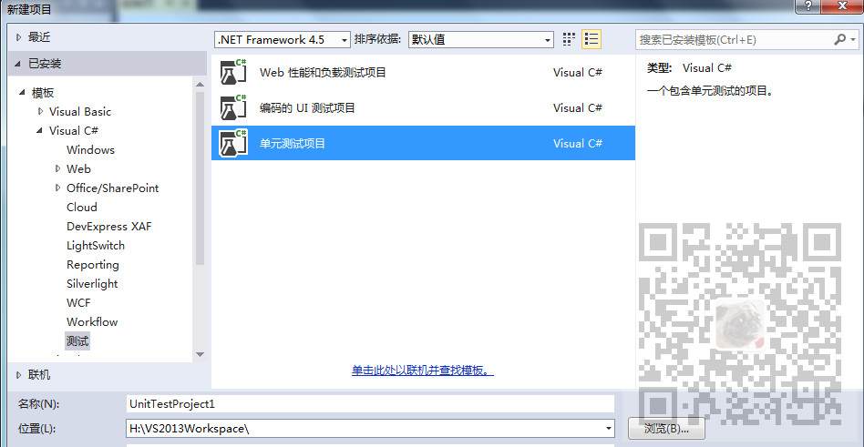
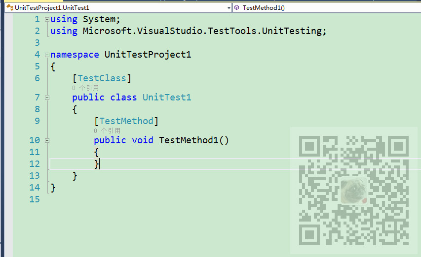
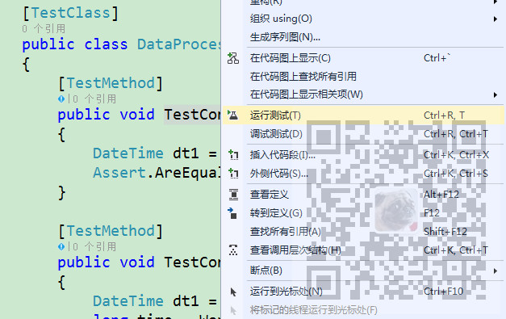
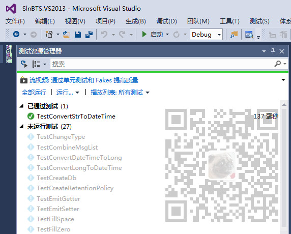
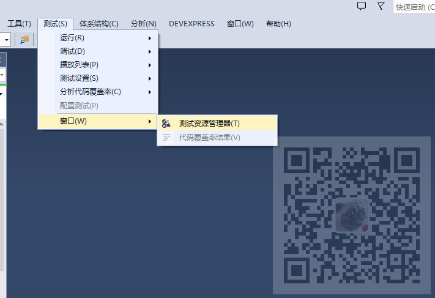
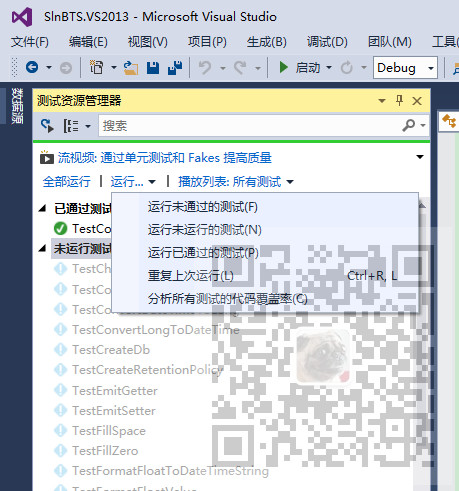

原文出处:本文由博客园博主霸道流氓提供。
原文连接:https://www.cnblogs.com/badaoliumangqizhi/p/11751920.html
原文连接:https://www.cnblogs.com/badaoliumangqizhi/p/11751920.html
场景
SpringBoot+Junit在IDEA中实现查询数据库的单元测试：
https://blog.csdn.net/BADAO_LIUMANG_QIZHI/article/details/92780716
SSM中怎样使用JUnit4+spring-test编写单元测试：
https://blog.csdn.net/BADAO_LIUMANG_QIZHI/article/details/85112004
SSM中实现分页与JUnit单元测试：
https://blog.csdn.net/BADAO_LIUMANG_QIZHI/article/details/85113289
在Java中参考上面进行单元测试，那么在.NET平台下，使用VS怎样对C#项目进行单元测试。
注：
博客主页：
https://blog.csdn.net/badao_liumang_qizhi
关注公众号
霸道的程序猿
获取编程相关电子书、教程推送与免费下载。
实现
打开VS在要新建单元测试项目的地方右键--添加--新建项目--测试--单元测试项目

新建完成后会自动包含一个测试类

using System;
using Microsoft.VisualStudio.TestTools.UnitTesting;
namespace UnitTestProject1
{
[TestClass]
public class UnitTest1
{
[TestMethod]
public void TestMethod1()
{
}
}
}
那么就可以按照这种格式进行单元测试。
一般如果需要测试某个工具类的某个方法的实际输出结果与期望结果是否一致。
就可以使用Assert断言来实现
[TestMethod]
public void TestConvertStrToDateTime()
{
DateTime dt1 = new DateTime(2019, 10, 28);
Assert.AreEqual(DataProcessor.ConvertStrToDateTime("2019-10-28"), dt1);
}
这样我们就可以知道DataProcessor.ConvertStrToDateTime这个工具类将字段串转换的时间是否与期望的dt1一致，一致就是通过单元测试。
运行测试
在方法名中右击--运行测试，就可以运行当前单元测试方法

运行之后就可以在测试资源管理器视图中查看测试结果

测试资源管理器在测试--窗口-测试资源管理器

在这里可以看到所有的测试，以及全部运行等选项。
